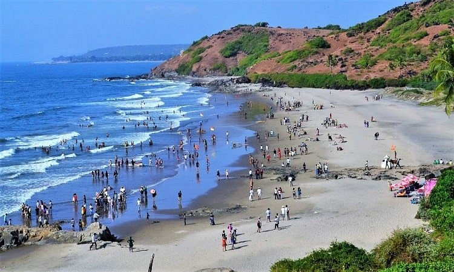

GOA TRIP
Goa is a place where you fall in love at first sight,as it is home to some of the most beautiful places. It Rarely has a visitor returned from this excellent vacation place unhappyly or dissatisfied. Other than shacks, beaches, and parties, this teeny-tiny state has a lot to offer.
Here are some of the places we visit in Goa
1.) BAGA BEACH

One of the most happening beaches in Goa, Baga Beach is where you will find water sports, fine dining restaurants, bars, and clubs.Watersports are the major attraction of Baga Beach.One can also go for dolphin spotting tours and island trips from the beach.
2.) FORT AGUADA

Fort Aguada was the most prized and crucial fort of Portuguese. The fort is so large that it envelops the entire peninsula at the southwestern tip of Bardez. Built on the mouth of Mandovi River, it was strategically located and was the chief defense of Portuguese against the Dutch.
3.) DUDHSAGAR FALLS

Dudhsager is one of the highest waterfalls in India. The falls are found in the quaint village of Mollem, Goa.The Dudhsagar falls are a magical sight.This is among the few sights you cannot miss out on while you’re visiting Dudhsagar. Dudhsagar Waterfall is one of the best tourist places in Goa.
4.) PALOLEM BEACH

Palolem is a most popular beach of South Goa. Enclosed by a thick forest of coconut palms, Palolem is popular amongst family vacationers as well as backpackers and young crowds. The beach is as perfect for a quiet laid-back holiday as for partying. The north side of the beach is where one can find family vacationers enjoying their quiet and relaxing holiday. In the centre and south of Palolem Beach, backpackers and young crowd can be seen hanging out at the beach shacks or enjoying watersports.
5.) CRUISE BOAT

One of the best ways to enchant yourself with the beauty of this tropical paradise is to go on a cruise. The fun filled, hour long activity sailing down the river provides a magical experience for an adventure trip. Enjoy the mesmerizing events of sunrises and sunsets sparkling the sky. The experience of cruising is unparalleled to any other adventure activity in Goa.There are amazing cruise tours in Goa that are filled with fun and amusements.